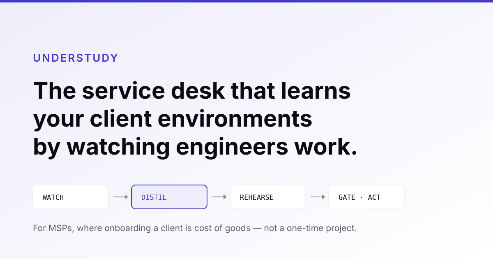

It records your engineers working — screen, actions, and ten seconds of spoken reasoning at the moments that matter — then clusters those recordings into a readable, executable skill library. Every AI service desk can resolve a ticket. None of them can learn where it is.
See how it works Read the pack
An MSP takes on a new client. Somebody spends three weeks learning how that client’s systems are wired — which policies are unusual, what breaks, how you know it worked — and most of it ends up in one person’s head. Then it happens again with the next client. And when that person leaves, it happens again with the same client.
It is not a documentation problem. Writing it down is a separate act from doing the work, so it competes with billable hours and loses. Understudy exists because those two acts can now be the same act.
Passive capture across the tools your engineers actually use — RMM consoles, directory, terminals, MDM. Credentials are dropped at capture, before storage. Narration is prompted only at decision points, ten seconds at a time.
Recordings of the same procedure cluster into one readable SKILL.md — goal, preconditions, steps, and a test for what “done correctly” means. Your engineers read it, correct it, and can reject it outright.
Skills run in shadow first, then behind approval gates. Every action is checked against its success criterion, under the agent’s own identity in your client’s audit log.
Gets this client’s procedure where there was a generic runbook — including the two ways this tenant differs from every other one.
Stops maintaining documentation nobody kept current. Reviews deviations for about forty minutes a month instead.
Reads what the system learned from his own sessions, in text, and corrects it. Gets interrupted less for things he has already explained.
Week one is a normal onboarding: your engineers map the tenant exactly as they always have. The product removes none of that and then adds review work. Environment one runs 31–46 hours against a 25–40 baseline — worse. Compression begins at the second client, at 18–28 hours, which is why environment one is free.
And on tickets we are not cheaper either. The work we automate is the cheapest quartile of your queue, which a junior technician clears for roughly $2–6. At $6 a resolved ticket we sit at or above your own marginal cost. What we sell there is throughput at a capacity ceiling, not savings.
Seventy documents: the research, the market arithmetic corrected three times in public, the architecture, and an audit that states what is still open.
Read the pack